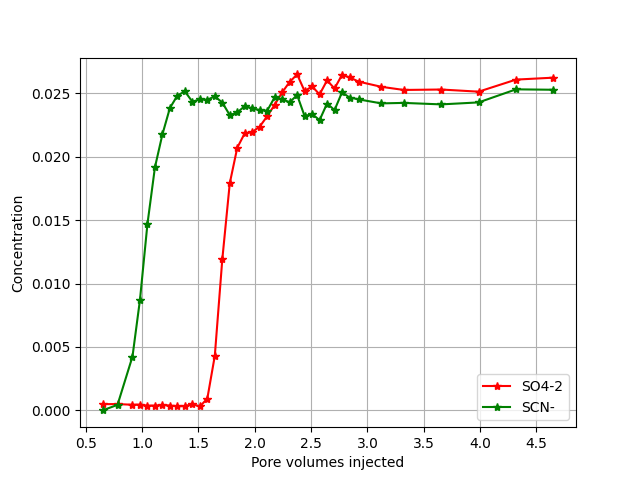
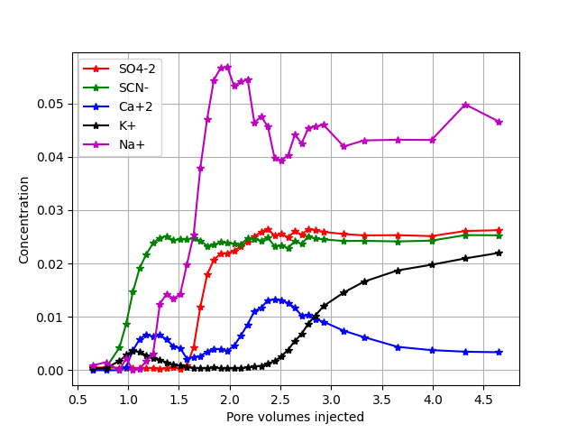
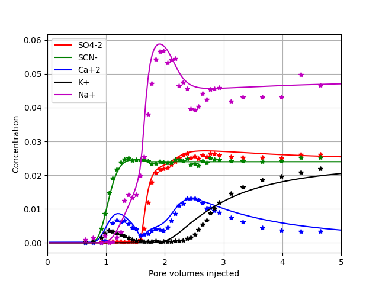
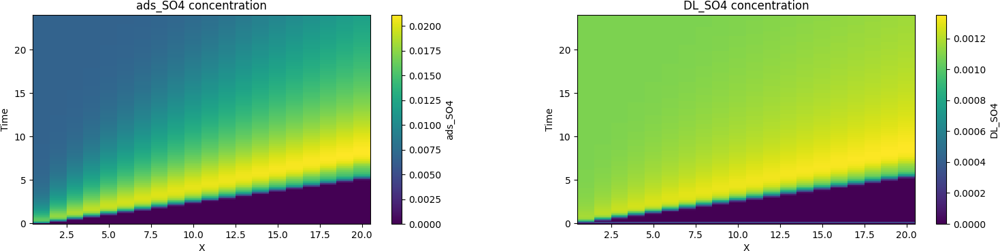

Adsorption of sulphate has been the subject of much research as it is believed to be one of the key players of wettability alteration in chalk [1]. In many core experiments sulphate adsorption is also used to measure the wettability of rock material [2]. The adsorption of sulphate is measured relative to a an inert tracer like \( \text{SCN}^⁻ \), typically what one observe and reports in publications are the delay of the sulphate ion relative to \( \text{SCN}^⁻ \). This is illustrated below using data from [3] [4].
Figure 1: Experimental data [4] from a Liege chalk core flood, where there is a delay of sulphate.

The area between the tracer and sulphate curve is suggested to be a direct measure of wettability [2]. However, the cation profiles are rarely shown in these experiments, in figure 2 the measured cations are shown.
Figure 2: Full experimental ion profile [4] from a Liege chalk core flood.

The full ion profile reveals a complicated pattern, below we demonstrate how to model this data set using equilibrium reactions, ion exchange and surface complexation.
Tf 24
Temp 130
Pres 800000.0
Imp 0
# ml/min
VolRate 0.2
# ml
Volume 39.1
NoBlocks 20
Flush .7
debug 0
WriteNetCDF 1
porosity 0.5
BASIS_SPECIES
# Name a0 Mw
SCN- 5 58.08 / HKF 909090 9 /
/end
chemtol
1e-7 1e-8
/end
INJECT 0
#solution name, time, flow rate
1 24
/end
geochem
solution 0
--Initial solution in column
pH 7 charge
HCO3 1.0E-08
Ca 1.0E-08
/end
complex
method 1
#specific surface area m^2/L pore volume, size of diffusion layer
s_area 5000.0 10
#donnan
#Name sites/nm^2
GCa 4.95
GCO3 4.95
/ end
iexchange
X 0.09
/ end
equilibrium_phases
calcite 1 0
/end
solution 1
--Injected brine
pH 7 charge
Na 4.8E-02
K 2.4E-02
SCN- 2.4E-02
SO4 2.4E-02
/end
/end
All the different blocks have been covered in solution example, ion exchange example, surface complex example, and equilibrium phases example. The transport module is described in transport example The effluent profiles for simulation and data is shown in figure 3.
Figure 3: Full experimental ion profile, dots [4], and model results (solid lines).

Model assumptions:
The file is run by using TRANSPORT keyword on the command line
Terminal>GeoChemX TRANSPORT <input_file>
The solver can optionally write simulation results to a NetCDF (Network Common Data Form) file. NetCDF is a self-describing, binary file format widely used in the geosciences, climate modeling, and fluid dynamics.
NetCDF files are particularly well suited for reactive transport simulations because they:
/* Store multi-dimensional data (space \( \times \) time \( \times \) species)
Here, NetCDF output is enabled using an input option such as:
WriteNetCDF 1
The output is written in the file <root_name>_NC
Structure of the NetCDF dataset:
The NetCDF file contains:
Variables: Each aqueous component (e.g., \( \Ca \), \( \Mg \), Tracer) is stored as a variable with dimensions \( (T, X) \).
The recommended way to work with NetCDF output in Python is using xarray, which provides labeled, N-dimensional arrays.
import xarray as xr
import matplotlib.pyplot as plt
ds = xr.open_dataset("transport_NC")
ds.load() # read all variables into memory
ds.close()
xr.open_dataset(...):opens the NetCDF file lazily (data are not read immediately)
ds.load():loads all variables into memory (recommended for small–medium datasets)
ds.close():closes the file handle once data are loaded
To plot chemical species as a function of time, one can use the following code,`DL_SO4` is the concentration of sulphate in the double layer and ads_SO4 is the total sulphate concentration adsorbed i.e. double layer, surface complexation and on exchange sites.
ion = 'DL_SO4'
#ion = 'ads_SO4'
plt.figure(figsize=(8, 4))
plt.pcolormesh(ds["X"], ds["T"], ds[ion], shading="auto")
plt.colorbar(label=ion)
plt.xlabel("X")
plt.ylabel("Time")
plt.title( ion + " concentration")
plt.show()
Figure 4: (left) total sulphate concentrationa and (right) sulphate in the diffusive layer.

Figure 4 shows the time development and along the core of sulphate adsorbed and the double layer concentration. Note that there is a maximum concentration before it reaches steady state.